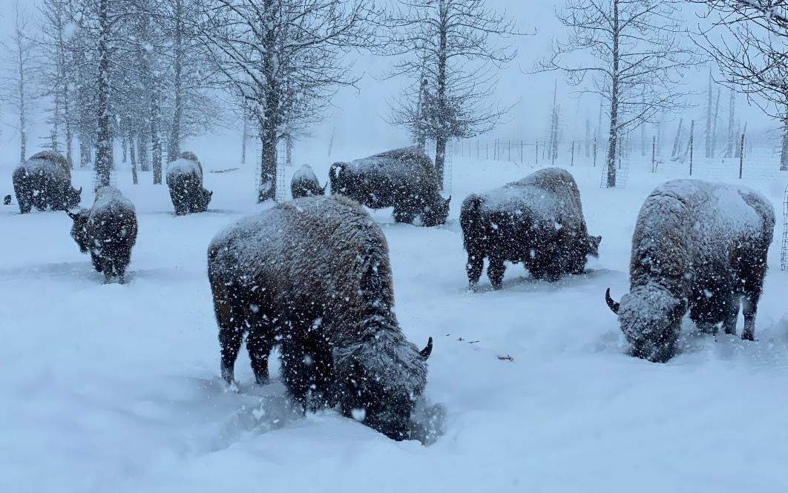

Our mission
The Bison Business Alliance brings together businesses that identify with the American bison to turn that connection into a sustained and coordinated effort for their conservation.
A North American icon.
The American bison is native to North America. Its historic range stretched across much of the continent, from Alaska and northern Canada to northern Mexico. By the late nineteenth century, commercial hunting and habitat loss had pushed bison to the brink of extinction.
The bison remains a recognizable symbol across the continent. Its silhouette appears in some of North America’s most recognizable brands, from sports teams to businesses that carry it on their products and signs.
Bison history and range from the National Park Service
Returning bison to their native range.
We’re building partnerships in Canada and the United States to support the people restoring bison to suitable places within their native range across North America.
Explore our work